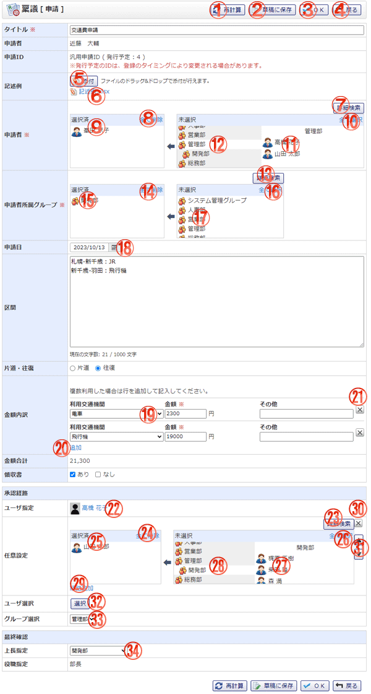

共有稟議テンプレートを使用して稟議を作成する画面です。

機能説明
再計算ボタン共有テンプレートの申請内容で、「自動計算(合計)」「自動計算(その他)」が選択されている場合に表示されます。 |
草稿に保存ボタン入力内容を草稿として保存し、保存完了画面へ遷移します。入力内容に不備がある場合エラーメッセージが表示されます。 |
|---|---|
OKボタン稟議新規作成確認画面へ遷移します。入力内容に不備がある場合エラーメッセージが表示されます。 |
戻るボタン遷移元の画面へ遷移します。 |
添付ボタンフォルダウィンドウが開きます。フォルダウィンドウでファイルを選択すると、添付ボタンの下にファイル名が表示されます。 |
ファイル名ファイルをダウンロードします。共有テンプレートの申請内容「添付ファイル」で設定したファイルは稟議に添付されません。また、削除アイコンも表示されません。 |
詳細検索ボタンユーザ選択ポップアップが表示されます。 |
全て削除ボタン選択済エリアに表示されている全てのユーザを未選択状態にします。 |
選択済ユーザユーザ名をクリックすることで、ユーザを未選択状態にします。 |
全て選択ボタン未選択エリアに表示されている全てのユーザを選択したエリアに追加します。 |
未選択ユーザユーザ名をクリックすることで、ユーザを選択済エリアに追加します。 |
グループ名グループ名をクリックすることで、グループに所属するユーザが未選択エリアに表示されます。 |
詳細検索ボタングループ選択ポップアップが表示されます。 |
全て削除ボタン選択済エリアに表示されている全てのグループを未選択状態にします。 |
選択済グループグループ名をクリックすることで、グループを未選択状態にします。 |
全て選択ボタン未選択エリアに表示されている全てのグループを選択したエリアに追加します。 |
未選択グループグループ名をクリックすることで、グループを選択済エリアに追加します。 |
カレンダーボタン日付選択カレンダーを表示します。 |
コンボボックス利用交通機関を選択します。 |
追加ボタン入力欄を一行追加します。 |
削除ボタン入力欄の削除を行います。 |
ユーザ名共有テンプレートの経路で、「ユーザ指定」を選択している場合に表示されます。 |
詳細検索ボタンユーザ選択ポップアップが表示されます。 |
全て削除ボタン選択済エリアに表示されている全てのユーザを未選択状態にします。 |
選択済ユーザユーザ名をクリックすることで、ユーザを未選択状態にします。 |
全て選択ボタン未選択エリアに表示されている全てのユーザを選択したエリアに追加します。 |
未選択ユーザユーザ名をクリックすることで、ユーザを選択済エリアに追加します。 |
グループ名グループ名をクリックすることで、グループおよびグループに所属するユーザが未選択エリアに表示されます。 |
経路追加ボタン経路を一行追加します。 |
経路削除ボタン経路の削除を行います。 |
任意経路設定並び替えボタン任意経路設定内の経路順を変更します。 |
選択ボタン共有テンプレートの経路で、「ユーザ選択(単一選択)」を選択している場合に表示されます。 |
グループ選択 グループコンボボックス共有テンプレートの経路で、「グループ選択(複数選択)」を選択している場合に表示されます。 |
上長指定 グループコンボボックス共有テンプレートの経路で、「上長指定」を選択している場合に表示されます。 |
表示・入力項目説明
タイトル
タイトルを入力します（100文字以内）。
申請ID
管理者設定で申請IDの使用を許可されている場合、稟議申請時に発行される予定の申請IDが表示されます。
あくまで予定なので、他のユーザと同時に稟議を申請した場合は、この申請IDが変更される可能性があります。
申請IDの使用許可は管理者設定 基本設定より行うことができます。
内容
内容を入力します（1,000文字以内）。
添付
添付するファイルを選択します。
個人テンプレートから稟議の内容をセットした場合、テンプレートに設定されている添付ファイルのリンクが表示されます。